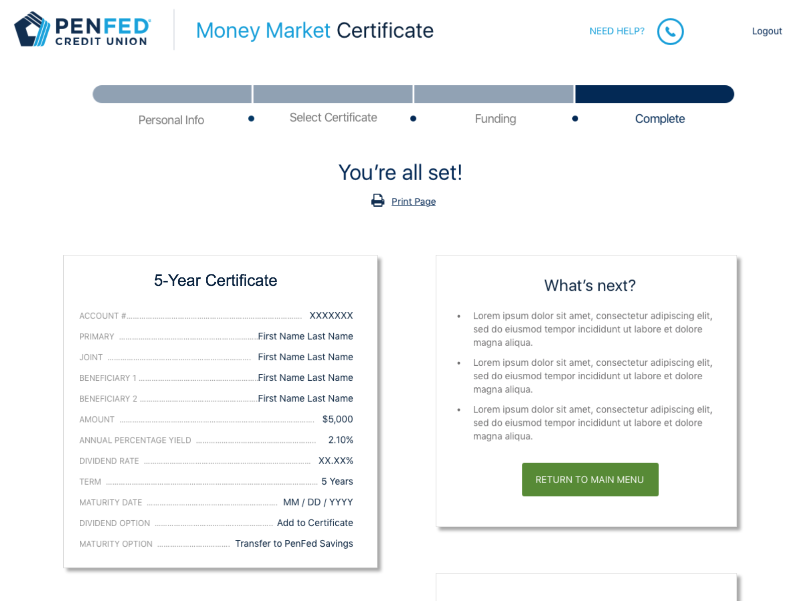
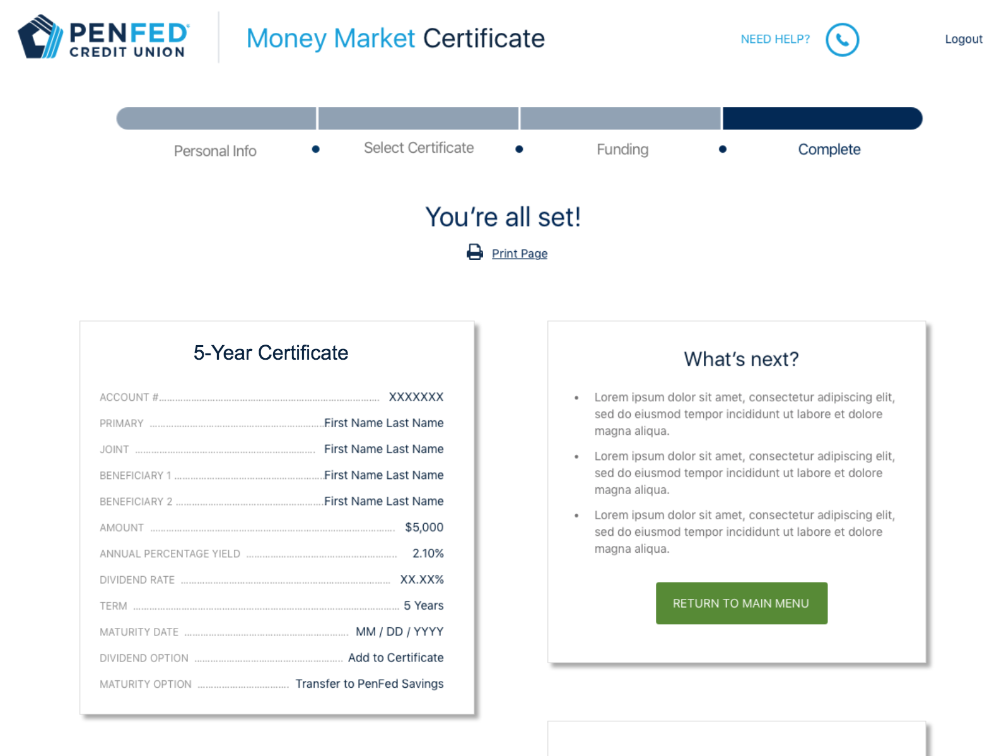
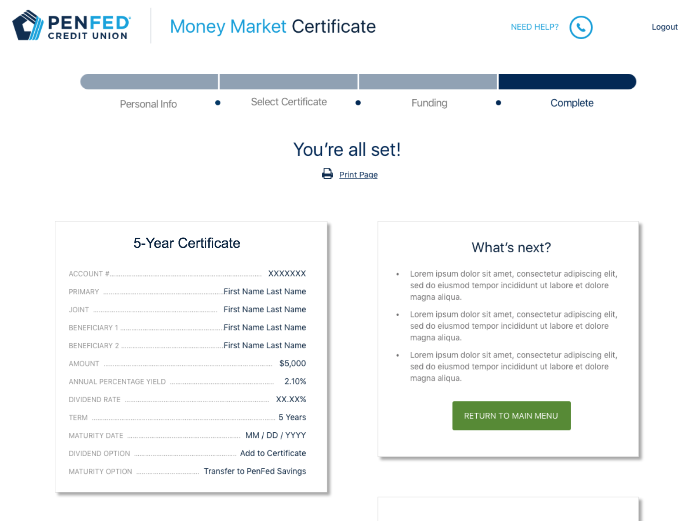

Certificate of Deposit Application Wireframes
Billy Grant
Project Snapshot
Business had a goal to meet. We used research and design to get them on their way.
PenFed wanted to increase its deposits. The business had some of the highest certificate rates in the country but the online experience for opening a certificate of deposit (CD) had not been updated in many years.
The existing application looked outdated and we wanted to streamline the process by improving the application flow.
Redesign the online experience for members opening new CDs to increase deposits.
As part of discovery, I explored different financial institutions to examine different approaches to investing in a certificate of deposit. I was then able to identify key features that could be leveraged.
I contributed to requirements gathering to speak for important user stories to be included.
I iterated through many flow proposals to eventually get approval from the business owner, IT, compliance, and UX.
Next I created low-fidelity wireframes and a clickable prototype to develop consensus among the project team. The prototype was also used to conduct user testing.

Certificate of Deposit Application Wireframes
Feedback was incorporated into design before high fidelity wireframes were designed and delivered for development.
I worked with the product owner and our Adobe Analytics team to determine what event tracking we wanted tagged in order to assess application performance analytics and frictions points.
Our goal was to learn from our data collection in order to continually improve the application post-launch.
The new CD application has received executive approval and is currently under development.
Approved UI for Certificate of Deposit Application